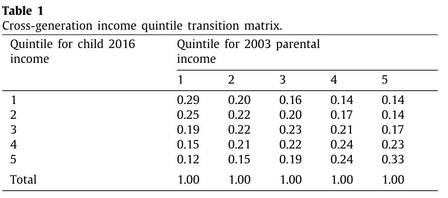
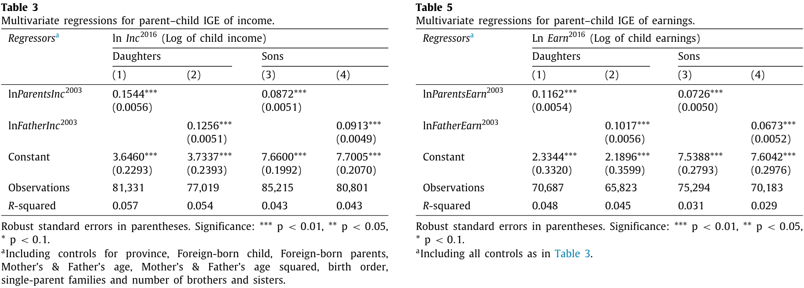
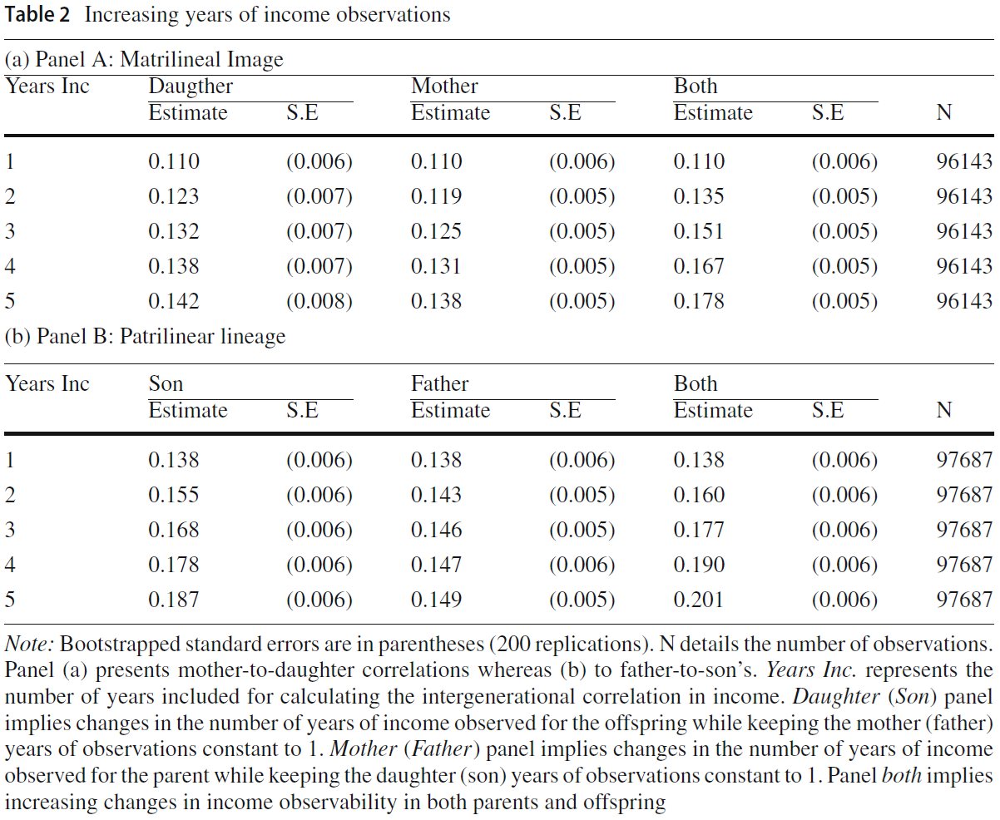
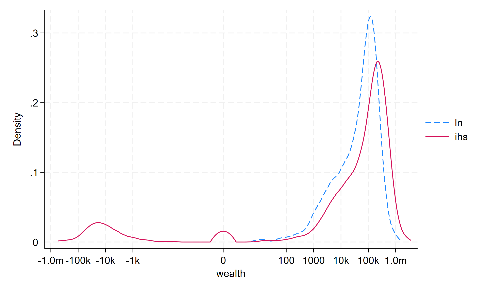
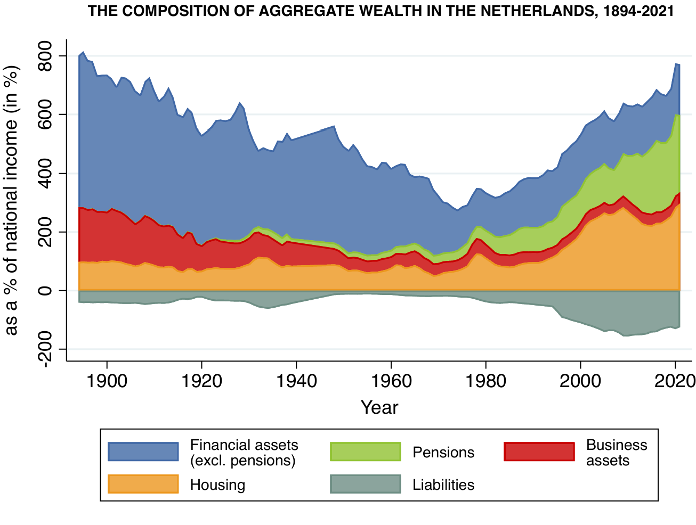
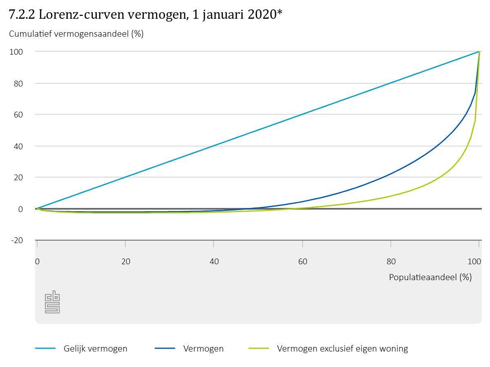

pie title gross disposable income by pop. decile "1st" : 5490 "2nd" : 16724 "3rd" : 22296 "4th" : 27698 "5th" : 34577 "6th" : 41571 "7th" : 48815 "8th" : 56555 "9th" : 67701 "10th" : 118185
Choices, Inequality and Welfare
University Minor Economics
Monday, November 16, 2026
7 Measuring Inequality & Poverty
7.1 Measuring Inequality
Consumption, Income, and Wealth
- consumption is main determinant of economic welfare
- income is important to pay for consumption expenditure
- wealth can derive from saving (postponed expenditure)
- all three are choice variables
- consumption (argument of utility function) is typically always positive
- income can be zero, if you dissave or someone else pays for your expenditure
- else, it requires effort (disutility)
- wealth can be zero or negative (net worth = assets \(-\) liabilities)
- consumption is (typically) not transferable, wealth is—what about income?
- consumption and income are flow variables
- wealth is a stock variable, and accumulates/decumulate over time
- to quantify inequality, (household) microdata are useful
- survey or administrative data
- since income tax was introduced, governments keep administration on know who reports how much income
- consumption only available from self-reports in survey data
- reliable measures of wealth at the micro level are scarce: wealth either from survey data, or, where applicable from (comprehensive) wealth tax
- economic models and statistical measurement suggest:
inequality of consumption \(\le\) inequality of income \(\le\) inequality of wealth
- consumption, income, and wealth intimately related in a life-cycle model
- consumer derives utility from consumption, and pays expenditure from
- current income
- proceeds (interest) from net saving (saving minus borrowing)
- this applies to many periods, over the entire life cycle
- when consumption \(<\) current income, saving builds up (net) wealth
- when current income low (e.g., during retirement) consumption can be upheld if paid from decumulating wealth
- saving, dissaving, and borrowing (financial markets participation) is used for consumption smoothing over time
- a smooth consumption profile maximizes intertemporal life-cycle utility
- interest rates (\(r\)) and time preference (\(\beta\)) are important determinants of the shape of wealth and consumption profiles
- in LC framework, inequality can come from
- different positions in LC between people of different ages
- different initial conditions between people of different birth years (or years of labor market entry): cohorts
- differential exposure to interest rate or asset price changes over calendar time
- different time preferences for current consumption, differences in risk attitudes
- differences in retirement planning, pension levels, life expectancy and mortality
- in addition, there are
- different education and career profiles, different productivities and labor market experiences
- differences in fertility, bequest motives
- heterogeneous shocks
- och mycket mer
Statistical Distributions
- measuring inequality is about describing and quantifying inequality of some distribution of a variable of interest (income, wealth, consumption) in statistical terms
- let \(Y\) denote the variable of interest
- main idea: take the values \(Y\) (or a random sample) as given and study the aspects of its distribution that tell how ‘different’ people are from one another
- if \(Y\) is continuously distributed, then its distribution can be represented by
- a probability density function (pdf) \(f_Y(y)\), or
- a cumulative distribution function (cdf) \(F_Y(y)=\int_{\min\{y\}}^y f_Y(z) \text{d}z\)
how to choose \(f_Y()\) so it fits the data?
- lognormal distribution often used to model continuous economic variables such as income or consumption
- a log-normally distributed random variable \(X\) has a natural logarithm \(\ln(X)\) that is normally distributed
- the pdf \(f(x)\) has two parameters, a location parameter \(\mu\) and a spread parameter \(\sigma\)
- those determine metrics for location such as mean, median, mode, for spread, such as standard deviation, or for shape, such as skewness (for definitions, see Wikipedia)
Play! Change \(\mu\) and/or \(\sigma\), pull green dot to see \(F(b)=\int_{0}^{b}f(x)dx = \Pr(x\le b)\)
Lorenz Curve and Gini Coefficient
most popular measure for inequality are Gini coefficient and Lorenz curve \(\Lambda\)
\(\Lambda\) encompasses all values of the distribution and can be derived from the pdf or cdf
starting point are the values of \(Y\) in ascending order
determine \(p\), the cumulative percentile of individuals considered (runs from 0 to 100%)
\(\Lambda\) measures for each \(p\) the cumulative share of income in total income (runs from 0 to 100%)
\(\Lambda\) is typically below the 45\(^\circ\)line, monotonically increasing and convex
Gini coefficient of inequality is based on the cumulative difference between the line of equality and the Lorenz curve
Play!
walkthrough: simulate different income distributions with varying degrees of inequality (reflected in the Gini coefficient) by sliding the movable dot.
The Lorenz curve is named after Max Lorenz (1876-1959).
The Gini coefficient is named after Corrado Gini (1884-1965).
Two-group Gini
Figure suggests very easy way to calculate the Gini coefficient: use difference of coordinates of income distribution point \(X\).
Reason: red and yellow triangle have same area, and height of yellow triangle corresponds to vertical distance between points \(P\) and \(X\) in red triangle: \(0.70−0.25=0.45\). Area \(A= \dfrac{1}{2} \cdot 0.45 \cdot 1.0 = 0.225.\)
Verify by calculating areas of triangles.
There are many different statistical summary measures of inequality. The following are examples of measures conforming to the
Pigou-Dalton Principle
under a transfer from a rich to a poor individual that preserves both ranking of individuals and total income, inequality must decrease.
\[\begin{eqnarray*} \mbox{CV}^x &=& \frac{\sigma}{\mu\sqrt{N-1}} \\ \mbox{Gini} &=& \frac{1}{2N^2\mu} \sum_i \sum_j | y_i-y_j| \end{eqnarray*}\]
\[\begin{eqnarray*} \mbox{Theil} &=& \frac{1}{N \ln N} \sum \frac{y_i}{\mu} \ln \frac{y_i}{\mu} \\ ^\dagger\mbox{Atkinson}_\varepsilon &=& 1 - \left[\frac{1}{N} \sum \left( \frac{y_i}{\mu} \right)^{1-\varepsilon} \right]^{\frac{1}{1-\varepsilon}} \end{eqnarray*}\]
\(^x\)CV is the coefficient of variation (altogether different from the concept of compensating variation) \(^\dagger\varepsilon\) is a policy parameter that expresses society’s degree of inequality aversion
7.2 Income Inequality
Measuring Income Inequality: Gini Coefficient
Measuring Income Inequality: Top 1% Share
Income Mobility Across Generations
- Intergenerational income elasticity (IGE): how strongly are children’s adult earnings associated with their parents’ earnings?
\[ \ln(y_i^{child}) = \alpha + \beta\ln(y_i^{parent}) + \varepsilon_i \]
- \(\beta\) is the IGE (compare regression lecture and log-form of elasticity)
- measures persistence
- not indicative of a causal effect of parental income on children’s economic success
- alternative: regress children’s income rank on parents’ income rank
- slope measures rank persistence \(\neq\) IGE
- Carmichael et al. (2020): links income and earnings register data for 28-year-olds in 2016 to their parents’ income and earnings in 2003
- Transitions: high mobility

Source: Carmichael, F. et al. (2020). “Evidence on intergenerational income transmission using complete Dutch population data.” Economics Letters, 189, 108996. ScienceDirect
- IGE estimates: low persistence

Colagrossi et al. (2023): links administrative income and education data across three generations and for multiple years
replicate Carmichael study and allow for more years, finding higher persistence
in general, NL mobility high in international comparison, but more ‘central Europe’ than ‘Nordic’
Source: Colagrossi, M., Geraci, A., & Mazzarella, G. (2023). “Intergenerational mobility in the Netherlands: models, outcomes and trends.” Journal of Economic Inequality, 21(4), 775–788. https://doi.org/10.1007/s10888-023-09569-7

Inequality and Policy
pie title taxes on income and wealth "1st" : 5037 "2nd" : 1829 "3rd" : 2166 "4th" : 3103 "5th" : 4364 "6th" : 5935 "7th" : 8003 "8th" : 11121 "9th" : 16489 "10th" : 45276
data source: CBS Statline; 2023
| Totals for 2025 | Number (m) | Awards (b€) |
|---|---|---|
| Childcare allowance | 0.72 |
5.14 |
| Rent allowance | 1.59 | 5.28 |
| Health care allowance | 4.76 | 6.52 |
| Child-related budget | 1.08 | 4.61 |
| Totaal | 8.15 |
21.54 |
| Unique households | 6.0 |
source: Ministry of Finance, 2025
- If SWF suggests that income inequality is of policy concern, then redistribution, typically from the rich to the poor, is a possible choice
- note: such redistribution does not tackle the causes of inequality, rather its symptoms
- distribution of incomes \(\{y_1,\ldots,y_N\}\)
- Budget-neutral redistribution: tax everyone using proportional income tax \(\tau\), redistribute total tax revenue \(\sum_i \tau y_i\) as a lump sum to everyone: \[ \mbox{after-tax income } \tilde{y}_i = y_i(1-\tau)+\frac{\tau \sum_i y_i}{N} \]
- assume no behavioral response, i.e., mean income does not change with redistribution
- low intergenerational mobility may point to low equality of opportunity
- policy can break the strong link between individuals’ economic wellbeing and their parental background
- prenatal and parental care
- universal access to health care for all (becoming) mothers and children
- paid parental leave (also for fathers)
- subsidized child care
- encourages labor market participation of lone mothers
- encourages inclusion for children from disadvantaged demographics
- mandatory primary (and secondary) schooling, equitable school funding policies
- access to secondary and tertiary education
- study loan or grant systems
- anti-discrimination labor market regulation
7.3 Wealth Inequality
Measuring Wealth Inequality
- lognormal pdf and Lorenz curve suitable to depict income or consumption
- wealth distribution compared to income or consumption distribution
- much more skewed
- many more zeros (in both surveys and tax records)
- some (large) negative values (incl. business owners)
- multimodality
- log-normal distribution not applicable
- Negative net wealth: households in lower tail often have debts greater than assets
- Zero net wealth:
- assets = debts \(\neq\) 0 (handful)
- assets = debts \(=\) 0 (nonreporting?)

Data Source: DNB Household Survey, 2017
- denote \(W\): wealth measured in $
- inverse hyperbolic sine (IHS) transformation \[ w = \ln(W + \sqrt{W^2+1}) \qquad\text{or}\qquad w = \operatorname{asinh}(W)\]


Source: CBS (2022)
- with positive values only, Lorenz curve \(\Lambda\) bounded in \([0,1]\) and monotonically increasing
- with negative and zero values, \(\Lambda\) may have decreasing and flat parts
- with negative values, standard Gini coefficient can exceed 1, making it hard to interpret; statistical literature suggests workarounds (normalized versions)
- CBS (2020): Gini net worth: \(\approx 0.76\) (ex. housing: \(\approx 0.87\))
- 6.6% of households had negative net wealth
- first-time home-buyers had up to 120% mortgage of original house value
Reasons for Wealth Inequality
- wealth is a stock concept
- net worth generates capital income, reinforcing accumulation
- net worth: security, economic power, transfer between people
- wealth typically measured at household level
- structure matters: real estate vs. financial wealth and debts
- saving over the life cycle (age)
- homeownership, house-price appreciation, access to mortgage finance
- capital gains on financial assets (stocks, ETFs etc.)
- inheritances and gifts
- taxation, tax avoidance (tax planning)
- inter vivos (ìncluding gifts), post mortem (inheritances/bequests)
- post mortem partly ‘accidental’
- CBS (2020): €17.7b inheritances and €13.1b gifts
- often: transfers 1/5 - 1/3 of private net worth
- transfers reinforce inequality:
- transfers arrive on top of recipients’ existing resources
- large transfers concentrated among rich families
- the rich earn higher average returns
- portfolio choice effect
- more likely to own businesses and equities
- behavorial effect
- more diversified portfolios
- more risk taking
- sophistication and access to advice
- tax planning (financial advisors)
- tax-induced portfolios (‘box 2’)
- portfolio choice effect
- evidence
- Norway: persistent household-level return heterogeneity and higher average returns at the top
- Netherlands: gains on substantial business interests has been important in the growth of wealth at the top
7.4 Poverty
Poverty
Poverty, specifically
- lack of command over commodities
- “… a severe constriction of the choice set [over commodities]” (Harold Watts)
- Lack of specific consumptions in terms of quantity or quality
- e.g. too little food energy intake, too little of specific nutrients, leaking roof, …
Poverty, more generally
- lack of “welfare” in wider sense
- e.g. lack of “capability”: inability to achieve certain “functionings”
- “beings and doings” (Amartya Sen)
- supply evidence / quantitative data to inform policy on the extent, developments/trends, and severity of poverty
- keep poor people on the political agenda
- Growth strategy
- Has poverty increased? Did growth help the poor? How did relative price changesaffect the poor? What is the impact of food price fluctuations? Who were the losers and who were the gainersfrom economy-wide policy reforms?
- Social Spending
- Who uses public services? At what cost? Who benefits from government subsidies? On average, versus at the margin? Who will be hurt by retrenchment?
- Targeted Interventions
- Who are the target groups? How should transfers be allocated? How much impact will they have on poverty?
Canonical Poverty Measures
Canonical statistical measures of poverty (Poverty Indices, PI)
- headcount ratio (HC): what percentage of population has income below poverty line?
- easy to measure and understand
- poverty gap (PG): what is the average relative distance of the poor from the poverty line?
- reflects (average) depth of poverty
- squared PG (SPG): what is the average relative squared distance of the poor from the poverty line?
- reflects severity of poverty, as it gives the highest weight to the poorest
- the graph shows the three canonical measures
- for a mathematical expression check the Math tab
Get the hang of poverty measures!
- shift the poverty line to see how poverty measures change
- click the links to see the implicit weighting scheme
The Foster-Greer-Thorbecke (FGT) index captures all three PIs \[ FGT_{\alpha }={\frac {1}{N}}\sum _{i=1}^{H}\left({\frac {z-y_{i}}{z}}\right)^{\alpha } \]
- \(y_i\) individual income, \(i=1,\ldots,N\)
- \(z\) poverty line
- \(N\) number of people
- \(H\) number of poor (incomes below \(z\))
- \(\alpha\): definitional parameter, \(\in \{0,1,2\}\)
- \(\alpha=0\): HC: \(\displaystyle FGT_{0} = \frac{H}{N}\)
- \(\alpha=1\): PG: \(\displaystyle FGT_{1} = {\frac {1}{N}}\sum _{i=1}^{H}\left({\frac {z-y_{i}}{z}}\right) = FGT_{0} \cdot \bar{y}_p\)
- \(\bar{y}_p\) avg income of the poor
- \(\alpha=2\): SPG: \(\displaystyle FGT_{2} = {\frac {1}{N}}\sum _{i=1}^{H}\left({\frac {z-y_{i}}{z}}\right)^{2}\)
Poverty Relief Measures and Consumer Choice
- transfers are used to address poverty to targeted and identified individuals
- in cash or in kind
- cash transfers can be used to
- move individuals back to the poverty line in terms of disposable income
- e.g., in inflationary periods
- counteract a price hike on specific goods
- e.g., using the idea of compensating variation
- move individuals back to the poverty line in terms of disposable income
- in-kind transfers for particular expenditure categories (necessitities)
- e.g., social/council housing; food stamps/coupons/special debit cards; reduced public transport fares; access to health services
- in-kind transfers reduce the choice set

- in-kind benefit is tied to consumption of good \(x_1\)
- it cannot be (directly) exchanged for good \(x_2\)
- there is a kink at \(E_2\) on the red BC
- individual might choose to consume at the kink
- cash benefit is fully fungible (grey BC), there is no kink, and it might afford higher utility at \(E_3\)
- recall that CV restores welfare to the level of utility that was obtained before the price hike
- this involves a money transfer to recipients
- the size of the transfer is meant not to make recipients better off than they had been before the price hike
- instead it corresponds to the cheapest compensation from the point of view of the government that leaves the recipient indifferent to experiencing and not experiencing the price hike
Anti-Poverty Policy and Labor Supply
- aim: provide consumption floor (poverty line)
- encouragement to earn own income (self-reliance)
- wide array of canonical policy tools:
- universal basic income
- minimum wage
- means-tested benefits
- negative income tax
- earned-income tax credit
- benefit notches
Policy can have unintended consequences (e.g., through perverse incentives)
Nonlinearities and Labor Supply (Dis-)Incentives
- labor supply model applying to low earnings worker
- under many policy alternatives, budget constraints become nonlinear, interacting in complex ways with work attitude (leisure preference)
- hint: move through walktrough and tabs in tandem
- Universal Basic Income is an unconditional fixed benefit
- possibly while removing all other conditional transfers
- UBI shifts the budget constraint up
- there may be income effects
- no substitution effects
- in practice, UBI is almost never truly universal
- minimum wage has, as any other wage rate \(w\) change two effects on labor supply
- an income effect
- a substitution effect
- it is possibile labor supply eventually decreases when the income effect dominates the substitution effect at high enough wage rates
- means-tested benefit should bring individual up to the poverty line
- but will be cut dollar-for-dollar as recipient’s own means (earnings) rise
- implies implicit tax rate of 100%
- 2 kinks in BC, expecially at participation margin where people might stick
- induced non-participation, and poverty trap
- Negative income tax has a guaranteed minimum income, irrespective of labor supply
- then taxes away the benefits at a rate below 100%
- mitigates somewhat the sharp disincentive to work of a means test if leisure preference not too strong
- Earned income tax credit has three phases
- phase-in: wage subsidy increases \(w\)
- flat part: wage subsidy ceased
- phase-out: wage tax decreases \(w\)
- 3 kinks, first one is most salient
- keeps incentive to work at small number of hours
- if program eligibility is tied to an earnings ceiling, earning a dollar above the ceiling may mean complete loss of program benefits
- resulting non-convex ‘notch’ represents a very sharp discontinuity
- disincentivizes additional labor supply even for those with modest preference for leisure
Conclusions
Summary
- Lorenz curve and Gini coefficient as standard statistical measure for inequality assessment
- income distribution often well-described by log-normal model
- wealth distribution is very different from income distribution, its features require special attention
- redistribution of income or wealth outcomes is social welfare-enhancing under a convex SWF
- achieving equality of opportunity may need structural reform to safeguard equal access to healthcare, child care, education, finance, work
- poverty policy aims at providing a consumption floor
- in-kind provision: targeting and self-selection of the needy
- unintended side effect of means testing: discourage effort taking
- benefit design can dis-/encourage labor supply (participation)
University Minor Economics • Choices, Inequality and Welfare • © 2026-27 Stefan Hochguertel